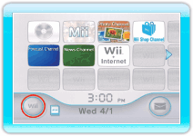
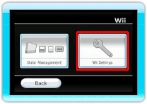
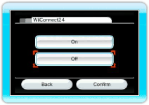

To protect your privacy, we recommend that you do not give out personal information about yourself such as your name, phone number, birth date, age, school, e-mail, or home address when communicating with others.
The End User License Agreement that governs Wii online gameplay and sets forth the Wii Privacy Policy and Wii Code of Conduct is available in the Wii console's System Settings and online at www.nintendo.com/consumer/systems/wii/en_na/privacy.jsp. Please review the Wii Privacy Policy for more information about how Nintendo protects and uses your personal information.
This game allows you to connect to the Internet (Nintendo Wi-Fi Connection Pay & Play and WiiConnect24) to enjoy matches and rankings for free, as well as to use Wii Points to download services and content. Keep the following in mind regarding the use of this service.
Note: You can use the Wii Parental Controls and WiiConnect24 settings to restrict
sending or receiving music mixes. For details, see p. 5 Parental Controls and the following section on WiiConnect24 settings.
- Connecting to the Internet may allow others to see information that you have entered (such as your character name). We therefore recommend that when entering information, you do not use any information that can be used to identify you personally, or any words that may make other people feel uncomfortable.
- Friend codes and Wii Numbers are part of a system that allows you to play with people you know. If you exchange friend codes or Wii Numbers with strangers, there is a risk that you could receive information or messages with offensive language. We therefore recommend that you do not give your friend codes or Wii Number to people you don't know.
- Do not engage in inappropriate activity that might cause problems for other players. If inappropriate conduct is reported or confirmed, you may be subject to penalties such as being banned from this service.
- The Nintendo Wi-Fi Connection Pay & Play and WiiConnect24 game servers may become temporarily unavailable without prior notice due to maintenance following any problems. In addition, the services for Nintendo Wi-Fi Connection Pay & Play-compatible software titles may be discontinued in the future. For details, refer to the Nintendo homepage.
- Be advised that Nintendo assumes no responsibility for any problems whatsoever resulting from the act of connecting to the Internet or from the inability of users to connect.
Nintendo Wi-Fi Connection Pay & Play is an online service that offers extra downloadable content for games, such as bonus stages or specialty items, to extend or enhance your gaming experience. Games that offer extra fee-based content, which may be downloaded using Wii Points, will be clearly marked with the new Nintendo Wi-Fi Connection Pay & Play logo.
Keep the following in mind when purchasing licenses for add-on content.
- Add-on content licenses are sold by Nintendo.
- Wii Points are also required to download add-on content (this involves a fee).
- For information on how to purchase Wii Points, go to the Wii Shop Channel or the Nintendo home page. (If a Nintendo Points Card is registered with the Wii console, it will be redeemed as Wii Points)
- You can use the "Account Activity" feature of the Wii Shop Channel to check the names and purchase dates of add-on content that you have downloaded, as well as to check the Wii Points you have used.
- You can use the Wii Shop Channel to check how many Wii Points you have.
- If you don't have enough Wii Points, you will not be able to purchase an add-on content license, unless you add Wii Points from within the Wii Shop Channel.
- Add-on content licenses that are purchased are saved in Wii system memory. If you don't have enough free space in your Wii system memory, you will not be able to purchase an add-on content license. Either delete data saved on the Wii console or move it to an SD memory card (sold separately). For details, refer to Wii Settings and Data Management in the Wii Operations Manual: Channels and Settings.
- Returns, refunds, or exchanges are not possible for add-on content for which a license has been purchased.
- Once a license has been purchased for add-on content, such content may be downloaded again at no charge, even after it has been deleted. Add-on content may cease to be provided without warning. In this case, it may no longer be available for further downloads.
- Add-on content data that is copied to an SD memory card can only be used on the Wii console from which it was copied. It cannot be used on any other Wii console.
Use the following procedure to change settings and restrict
sending or receiving music mixes.
- 
Select Wii Options from the Wii Menu. The main Wii Options menu will be shown.
- 
Select Wii Settings → WiiConnect24. The WiiConnect24 settings will be shown.
- 
Select Off.
Note: To stop messages sent from Digital Leisure, point at the icon displayed to the upper-right of a sent message and press  .
.